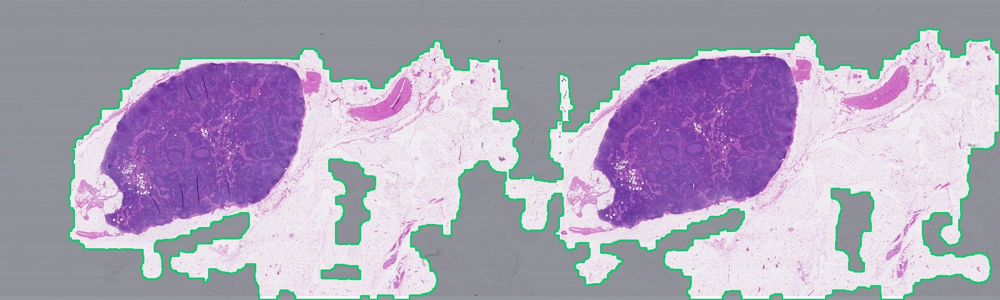

View official expert annotation
Verified preparation
The calibrated H&E image and the image-derived tissue area passed independent source and pixel checks. The reviewed contour includes the two main tissue fragments and connecting pale tissue while excluding exterior glass and large enclosed white spaces. Virchow2 factors 1, 2 and 4 retain all 1,280 channels and passed independent row, model, source and GPU-cleanup audits.
The official expert annotation is available on the linked page. Five-method predictions and scores remain pending; no performance value is reported here.
Tissue-region overview · reviewed H&E support

This compact image documents tissue selection. It is not an expert metastasis mask or a model prediction.